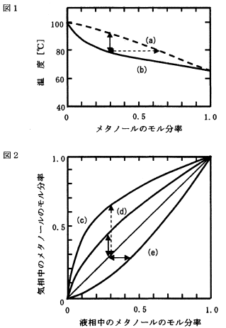

平成27年度 問28 化学プロセス
平衡状態における液相組成－気相組成－温度－圧力の関係を気液平衡図で表すことができる。その一例としてメタノール－水系の気液平衡関係を下図に示す。
次の記述の下線部（ア）～（エ）について、正しいものの組み合わせは１～5のうちどれか。ただし、図1、図2においての矢印は、それぞれ同じ長さである。
図1は平衡温度と組成との関係を示す。図中の線（a）は（ア）液相線（又は沸点曲線）を示し、線（b）は、（イ）気相線（又は露点曲線）を示す。
メタノールの沸点は、（ウ）約65℃である。
図2は液相組成と気相組成の関係を示したものである。図1から図2を作図すると、（エ）曲線（c）が得られる。

①
（ア）、（イ）
②
（ウ）、（エ）
③
（ア）、（エ）
④
（イ）、（ウ）
⑤
（イ）、（エ）
正答
② （ウ）、（エ）
図1は沸点図とも呼ばれ、あるモル濃度で温度を上昇させたときの状態変化を表す図です。温度上昇と共に気化していくことから（a）は気相線、（b）は液相線です。横軸のモル分率が0および1の時に各成分の沸点を表します。水（沸点100℃）とメタノール（沸点65℃）であることが読み取れます。
図1において、同一温度ではメタノールのモル分率が液相0.3と気相0.6と点線矢印で記載された分の差があります。これを踏まえ図2を見ると液相のメタノールのモル分率に対し気相のメタノールのモル分率が2倍近い（c）が最も適した曲線と言えます。